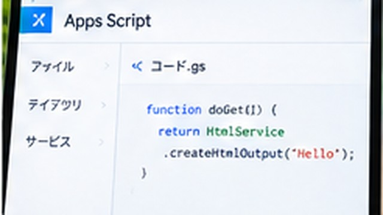

GASでGoogleスプレッドシートを操作する方法｜基本的な書き方を解説
GASからGoogleスプレッドシートのシートやセルを取得し、値を読み書きする基本的なコードを解説します。

結論
GASでGoogleスプレッドシートを操作する基本は、スプレッドシートを取得する → シートを取得する → セル範囲を取得する → 値を読む・書くという順番です。
スプレッドシートから「拡張機能」→「Apps Script」で作成したスクリプトなら、現在のスプレッドシートを取得して操作できます。
セルへ文字を書き込む
たとえば、現在のスプレッドシートにある「シート1」のA1セルへ文字を入れるコードは次のように書けます。
function writeCell() {
const spreadsheet = SpreadsheetApp.getActiveSpreadsheet();
const sheet = spreadsheet.getSheetByName('シート1');
sheet.getRange('A1').setValue('こんにちは');
}実行すると、指定したシートのA1セルへ「こんにちは」と入力されます。
セルの値を取得する
A1セルの値を読み取り、ログへ表示する例です。
function readCell() {
const spreadsheet = SpreadsheetApp.getActiveSpreadsheet();
const sheet = spreadsheet.getSheetByName('シート1');
const value = sheet.getRange('A1').getValue();
console.log(value);
}getValue() で1セルの値を取得できます。
複数セルをまとめて取得する
表を扱う場合は、1セルずつ処理するより範囲をまとめて取得する方法が便利です。
function readTable() {
const sheet = SpreadsheetApp
.getActiveSpreadsheet()
.getSheetByName('シート1');
const values = sheet.getRange('A1:C5').getValues();
console.log(values);
}getValues() の結果は、行と列を持つ二次元配列として扱います。
シート名が違うとエラーの原因になる
コードで 'シート1' と指定していても、実際のタブ名が「売上一覧」なら対象シートを取得できません。
コピーしたサンプルコードが動かない場合は、最初に自分のスプレッドシートのシート名とコード内の名前が一致しているか確認してください。
大量データはまとめて読み書きする
大量のセルをループのたびに getValue() や setValue() で操作すると、処理に時間がかかりやすくなります。
必要な範囲を getValues() でまとめて取得し、JavaScript側で加工してから setValues() でまとめて戻す考え方を覚えておくと効率的です。
まとめ
GASでスプレッドシートを操作するときは、SpreadsheetAppから対象シートを取得し、getRange() でセル範囲を指定します。最初は1セルの読み書きから試し、動作を確認してから複数セルや自動処理へ広げてください。
親記事
Google Apps Script（GAS）とは？できること・始め方を初心者向けに解説

企業の情報システム・DX推進・マーケティング業務などを経験。PC・Webサービス・業務自動化など、実際に試して分かったことを初心者向けに解説しています。
運営者情報を見る →